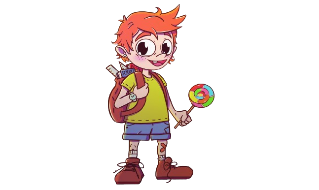

CEAC FP cuenta con dos centros privados de Formación Profesional que ofrecen ciclos de grado medio y grado superior con un único objetivo: proporcionar a los alumnos de todas las herramientas para que accedas al mercado de trabajo.
CEAC MADRIDContamos con una experiencia educativa de más de 75 años, pero no nos limitamos a ella. Le sumamos la del abanico de empresas que avalan nuestras formaciones y colaboran como desarrolladoras o participantes en los planes de estudios.
CEAC BARCELONA¡Hola!, soy Dens, el protagonista de este proyecto. Molaria es un programa educativo que va dirigido al alumnado del segundo ciclo de educación infantil con edades comprendidas entre los 3 y los 6 años en materia de salud bucodental.
Este proyecto engloba de una forma lúdica y atractiva los hábitos de alimentación saludable, las técnicas de higiene oral adaptadas a esta etapa y la utilización de los diferentes productos específicos para ello. Este programa se llevará a cabo a través de la técnica de la gamificación, accesible y sostenible en el tiempo para ponerlo en práctica de manera efectiva y sencilla.
Se trabajará en la prevención de problemas y patologías bucodentales concretas de los niños entre 3 y 6 años, es decir, atajar el problema antes de que aparezca.
Dado que la aparición de estas patologías está asociada a hábitos alimenticios y de higiene bucodental, se aborda el proyecto desde un punto de vista integral que incluye todos los factores implicados.
Educación Infantil
Farmacia y parafarmacia
Higiene bucodental
Dietética
Animaciones 3D, Juegos y Entornos Interactivos
Administración y finanzas
Desarrollo de aplicaciones Web
Desarrollo de aplicaciones Multiplataforma
Molaria cuenta un episodio en la vida de Dens, un niño al que le gusta mucho comer dulces, entre ellos chocolate, galletas, caramelos, piruletas… Un día, sus padres le llevan por primera vez a la consulta del dentista y al examinarlo comienza la historia.
Una muela nos cuenta la historia de Molaria y sus habitantes, la ciudad dental de Dens. Comienza presentando a los dientes y sus funciones. En un principio, sólo había dos incisivos, población que fue aumentando y variando a medida que Dens iba creciendo.